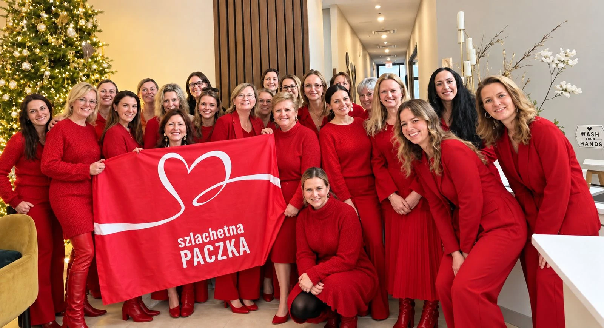
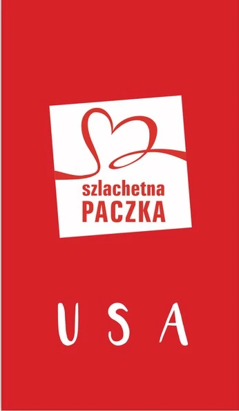
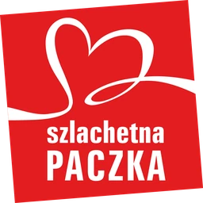
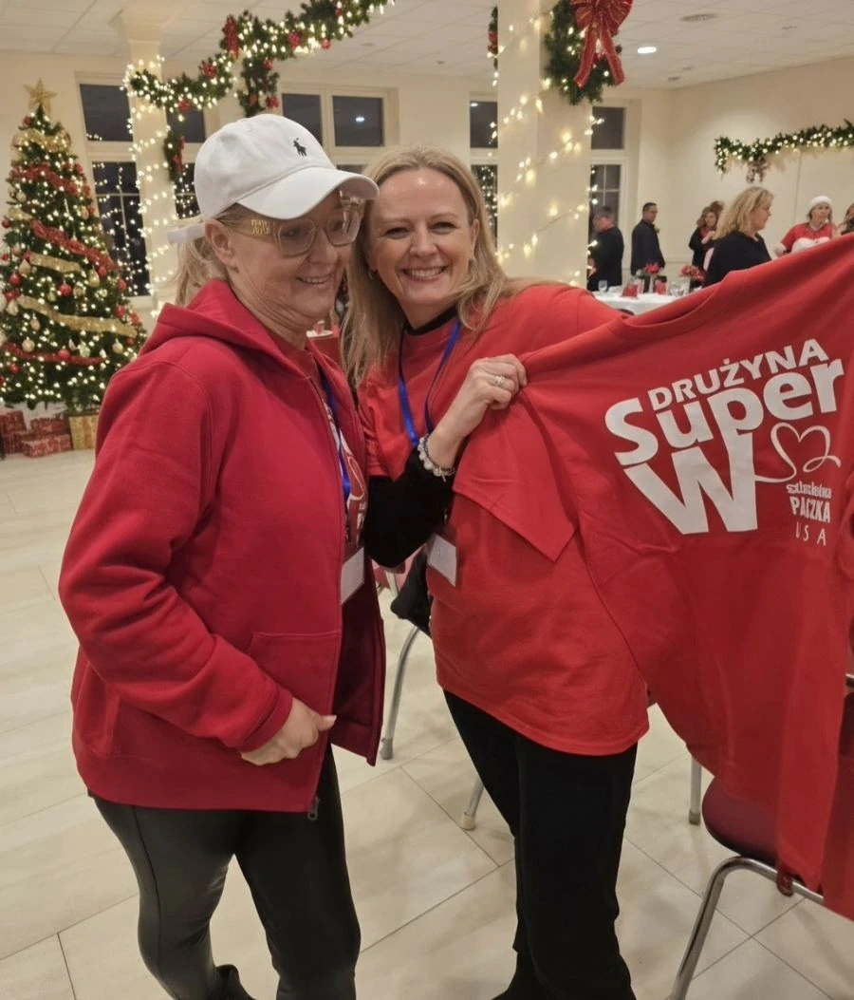

🤝
Zostań wolontariuszem
Odwiedzasz rodziny, opisujesz ich potrzeby i dostarczasz paczki w grudniu. Zapewnimy szkolenie i wsparcie koordynatora. Nigdy nie działasz sam.

Noble Hearts Foundation powstała, by łączyć rodziny w potrzebie z ludźmi, którzy chcą pomagać – konkretnie, z szacunkiem i twarzą w twarz. Prowadzimy projekt Szlachetna Paczka USA: pomagamy tu, na miejscu, rodzinom mieszkającym w Stanach Zjednoczonych. Opieramy się na sprawdzonym w Polsce modelu Szlachetnej Paczki.
O nas
Noble Hearts Foundation to amerykańska organizacja non-profit z siedzibą w Chicago, założona przez wolontariuszy od lat związanych z projektem Szlachetna Paczka w Stanach Zjednoczonych. Wierzymy, że pomoc ma sens wtedy, gdy jest mądra: trafia do konkretnej rodziny, odpowiada na jej prawdziwe potrzeby i daje impuls do zmiany – a nie uzależnia.
Naszą misją jest wspieranie rodzin i osób w trudnej sytuacji życiowej tu, na miejscu, na terenie Stanów Zjednoczonych – przede wszystkim rodzin polonijnych, ale nie tylko.
Jak działamy
Przyjmujemy model Szlachetnej Paczki w Polsce. W tym modelu nikt nie pomaga anonimowo – każda rodzina ma swoich wolontariuszy i swoich darczyńców.
Przeszkoleni wolontariusze spotykają się z rodziną w jej domu, poznają jej historię i wspólnie z nią określają, czego naprawdę potrzebuje.
Wolontariusze przygotowują rzetelny opis sytuacji i konkretną listę potrzeb – od żywności i ubrań po sprzęt, leki czy pomoce szkolne.
Darczyńcy – osoby, rodziny, firmy lub grupy przyjaciół – wybierają konkretną rodzinę i przygotowują paczkę dopasowaną do jej potrzeb.
W grudniu wolontariusze dostarczają paczki prosto do domów rodzin. To moment spotkania, który zostaje na długo – po obu stronach.
Oprócz pomocy materialnej pomagamy wieloaspektowo – tak, by zaadresować każdy problem rodziny, nie tylko ten najbardziej widoczny.
„To nie są zwykłe prezenty. To historie ludzi, których ktoś zauważył. To nadzieja włożona do kartonu.”
Nasze korzenie
Szlachetna Paczka to jeden z największych i najbardziej rozpoznawalnych programów pomocowych w Polsce, prowadzony od ponad 25 lat przez Stowarzyszenie WIOSNA. Co roku dziesiątki tysięcy wolontariuszy i darczyńców docierają do rodzin, o których nikt inny nie pamięta.
Noble Hearts Foundation jest obecnie wyłącznym partnerem Szlachetnej Paczki (Polska) w Stanach Zjednoczonych. Nasz model działania jest oparty na Szlachetnej Paczce: te same zasady, standardy i wartości – za zgodą i przy wsparciu organizacji, która realizuje Paczkę w Polsce.

Szlachetna Paczka USA
projekt Noble Hearts Foundation

Szlachetna Paczka
Stowarzyszenie WIOSNA, Polska
szlachetnapaczka.pl

Dołącz
Odwiedzasz rodziny, opisujesz ich potrzeby i dostarczasz paczki w grudniu. Zapewnimy szkolenie i wsparcie koordynatora. Nigdy nie działasz sam.
Wybierz konkretną rodzinę i przygotuj dla niej paczkę – sam, z rodziną, z przyjaciółmi lub z zespołem w pracy. Wiesz dokładnie, komu i jak pomagasz.
Firmy, parafie, szkoły i organizacje polonijne mogą wesprzeć nas finansowo, rzeczowo lub logistycznie – i zaangażować swoją społeczność.
Kontakt
Twoja darowizna pozwoli nam przeszkolić wolontariuszy, dotrzeć do rodzin i zorganizować pierwszy grudniowy finał. Noble Hearts Foundation jest organizacją 501(c)(3) – darowizny podlegają odliczeniu od podatku w USA.
Uruchamiamy możliwość przekazywania darowizn online. Do tego czasu prosimy o kontakt: maggienoblehearts@gmail.com.